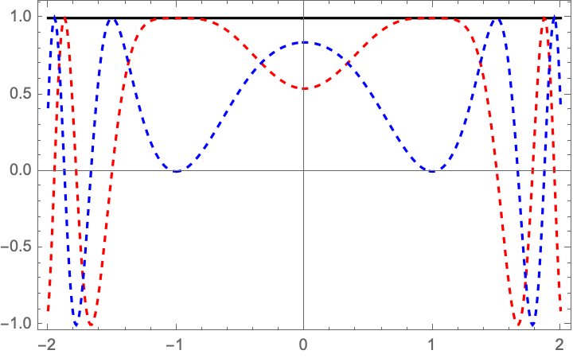
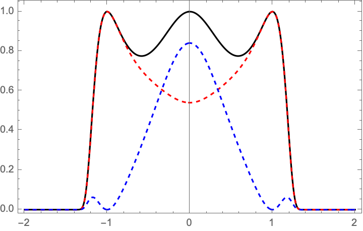

We develop a Picard-Lefschetz Hamiltonian Monte Carlo following Fujisawa, Nishimura, Sakai, and Yosprakob (2022). The expectation value of the observable \(\mathcal{O}\) with respect to the phase \(e^{iS}\) with the action \(S\) takes the form
\[\langle \mathcal{O}(\boldsymbol{x}) \rangle =\frac{\int_{\mathbb{R}^N} \mathcal{O}(\boldsymbol{x}) e^{iS(\boldsymbol{x})}\mathrm{d}\boldsymbol{x}}{\int_{\mathbb{R}^N} e^{iS(\boldsymbol{x})}\mathrm{d}\boldsymbol{x}}.\]
Unfortunately, these integrals are generally difficult to evaluate, as the result might depend on a delicate cancellation of terms due to the oscillations in \(e^{iS}\). We will here combine Hamiltonian Monte Carlo methods with Picard-Lefschetz theory to mitigate the oscillations and efficiently evaluate the expectation value.
We extend the ‘action’ \(S\) in the complex plane and consider the downward’s flow
\[\frac{\partial z_k(\boldsymbol{x}, \sigma)}{\partial \sigma} = i\frac{\overline{\partial S(\boldsymbol{z}(\boldsymbol{x},\sigma))}}{\partial z_k}\]
with respect to the \(h\)-function \(h(\boldsymbol{z}) = \text{Re}[i S(\boldsymbol{z})]\). Along the deformed manifold \(M_\tau = \{\boldsymbol{z}(\boldsymbol{x}, \tau)|\boldsymbol{x} \in \mathbb{R}^N\}\) for fixed \(\tau\), the expectation value takes the form
\[\langle \mathcal{O}(\boldsymbol{x})\rangle = \frac{\int_{\mathbb{R}^N} \mathcal{O}(\boldsymbol{x})e^{iS(\boldsymbol{z}(\boldsymbol{x},\tau))} \text{det} (J(\boldsymbol{x},\tau))\mathrm{d}\boldsymbol{x}}{\int_{\mathbb{R}^N} e^{iS(\boldsymbol{z}(\boldsymbol{x},\tau))} \text{det} (J(\boldsymbol{x},\tau))\mathrm{d}\boldsymbol{x}},\]
with the Jacobian matrix
\[J_{kl}(\boldsymbol{x},\sigma) = \frac{\partial z_k(\boldsymbol{x},\sigma)}{\partial x_l}.\]
For the one-dimensional example with \(S(x)=(x-1)^2(x+1)^2\), the deformed manifold can be visualized in the complex plane \(\mathbb{C}\).
This integral is better behaved on \(M_\tau\), as the integrand vanishes away from the relevant saddle points of the ‘action’.
|  |  |
It can in particular be evaluated using Hamiltonian Monte Carlo methods.
To efficiently sample the parameter space, we introduce the Hamiltonian
\[H(\boldsymbol{x},\boldsymbol{p})= \frac{1}{2}\boldsymbol{p}^TM^{-1}\boldsymbol{p} - h(\boldsymbol{z}(\boldsymbol{x},\tau))\]
with the auxiliary momentum \(\boldsymbol{p}\) conjugate to \(\boldsymbol{x}\) and the symmetric positive definite mass matrix \(M\). The Hamiltonian equations take the form
\[ \begin{align} \frac{\mathrm{d} \boldsymbol{x}}{\mathrm{d}s} &= M^{-1}\boldsymbol{p}(s),\\ \frac{\mathrm{d} \boldsymbol{p}}{\mathrm{d}s} &= \boldsymbol{F}(s), \end{align} \]
with the force
\[ \begin{align} \boldsymbol{F}(s) &= \nabla_{\boldsymbol{x}} h(\boldsymbol{z}(\boldsymbol{x},\tau))|_{\boldsymbol{x}=\boldsymbol{x}(s)}. \end{align} \]
See for example the force for the one-dimensional action \(S(x)=(x-1)^2(x+1)^2\).
Starting from an initial point \(\boldsymbol{X}_0\) and an initial momentum \(\boldsymbol{P}_0\) sampled from the multi-dimensional Gaussian distribution \(\mathcal{N}(\boldsymbol{0},M)\), we evaluate the Hamiltonian flow for a time \(s_f\). At this time, we evaluate the Hamiltonian to obtain the fluctuation
\[\delta H = H(\boldsymbol{x}(s_f), \boldsymbol{p}(s_f)) - H(\boldsymbol{x}(0), \boldsymbol{p}(0)).\]
We accept this sample \(\boldsymbol{x}(s_f)\) with probability \(\text{min}(1, e^{-\delta H})\). If we accept the sample, we repeat these steps from the new initial position \(\boldsymbol{X}_1=\boldsymbol{x}(s_f)\). If we decline the sample, repeat the step from the original position \(\boldsymbol{X}_0\). Using this method, we obtain an ensable of points \((\boldsymbol{X}_1,\boldsymbol{X}_2,\dots,\boldsymbol{X}_{N_{samples}})\) sampling the distribution with the probability density
\[p(\boldsymbol{x}) \propto e^{h(\boldsymbol{z}(\boldsymbol{x},\tau ))}.\]
The expectation value can be estimated as
\[\langle \mathcal{O}(\boldsymbol{x}) \rangle = \frac{\sum_{s=1}^{N_{samples}} \mathcal{O}(\boldsymbol{X}_s)J(\boldsymbol{X}_s,\tau) e^{i H(\boldsymbol{z}(\boldsymbol{X}_s,\tau))}}{\sum_{s=1}^{N_{samples}} J(\boldsymbol{X}_s,\tau) e^{i H(\boldsymbol{z}(\boldsymbol{X}_s,\tau))}},\]
with \(H(\boldsymbol{z}) = \text{Im}(iS(\boldsymbol{z}))\).
We descretize the flow using difference equations. We write the flow-time in terms of the steps \(\sigma_n= n \epsilon\) with \(n=0,1,2,\dots,N_\tau\) and \(\tau = N_\tau \epsilon\). We approximate the flow using the equation
\[z_k(\boldsymbol{x},\sigma_{n+1}) = z_k(\boldsymbol{x},\sigma_n) + i\epsilon \frac{\overline{\partial S(\boldsymbol{z}(\boldsymbol{x},\sigma_n))}}{\partial z_k}\]
with the boundary condition \(z_k(\boldsymbol{x},\sigma_{0})=\boldsymbol{x}\). The Jacobian satisfies the equation
\[J_{kl}(\boldsymbol{x}, \sigma_{n+1}) = J_{kl}(\boldsymbol{x},\sigma_n) + i \epsilon \overline{ H_{km}(\boldsymbol{z}(\boldsymbol{x},\sigma_n)) J_{ml}(\boldsymbol{x},\sigma_n)}\]
with the Hessian \(H_{ij}(\boldsymbol{z}) = \frac{\partial^2 S(\boldsymbol{z})}{\partial z_i \partial z_j}\) and the boundary condition \(J_{kl}(\boldsymbol{x}, \sigma_{0}) = I_N\) with \(I_N\) the \(N\times N\) identity matrix.
Starting from a normally distributed initial momentum \(\boldsymbol{p}_0\), we solve the Hamiltonian system with a leapfrog kick-drift-kick routine \[ \begin{align} \boldsymbol{p}_{i + 1/2} &= \boldsymbol{p}_{i} + \frac{\Delta s}{2} \boldsymbol{F}_i,\\ \boldsymbol{x}_{i+1} &= \boldsymbol{x}_{i} + \Delta s M^{-1}\boldsymbol{p}_{i+1/2} ,\\ \boldsymbol{p}_{i+1} &= \boldsymbol{p}_{i+1/2} + \frac{\Delta s}{2} \boldsymbol{F}_{i+1}, \end{align} \]
for \(i=0,1,\dots, N_s\) with \(N_s \Delta s = s_f\) where we define the force \(\boldsymbol{F}_i = 2\ \text{Re}[\boldsymbol{f}(\boldsymbol{x}_i, \sigma_0) ]\) with \(\boldsymbol{f}(\boldsymbol{x}_i, \sigma_0)\) obtained using the backpropagation scheme \[ f_j(\boldsymbol{x}, \sigma_{n-1}) = f_j(\boldsymbol{x}, \sigma_{n}) -i \epsilon \overline{f_i(\boldsymbol{x},\sigma_{n})}H_{ij}(\boldsymbol{z}(\boldsymbol{x},\sigma_{n - 1})), \] with the boundary condition \(f_j(\boldsymbol{x},\tau) = \text{Re}[ i \nabla S(\boldsymbol{z}(\boldsymbol{x}, \tau))]\). We accept the sample \(\boldsymbol{x}(s_f)\) with probability \(\text{min}(1, e^{-\Delta H})\) with the change in the Hamiltonian
\[\Delta H = H(\boldsymbol{x}_{N_s}, \boldsymbol{p}_{N_s}) - H(\boldsymbol{x}_0, \boldsymbol{p}_0).\]
For the one-dimensional example with the action \(S(x)=(x-1)^2(x+1)^2\) we see that we sample the appropriate distribution.
Find the code at:
git clone https://github.com/jfeldbrugge/PL_HMC.git